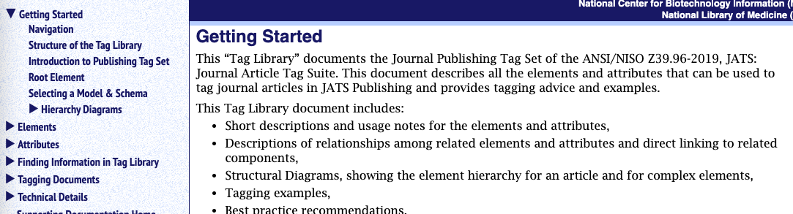

The US National Library of Medicine conducted some usability studies on the JATS homepages and the Tag Library documentation. Users had a lot of good suggested, many of which the latest Tag Libraries implement. But the only users interviewed were experienced ones, and they were unanimous on the recommendation to remove "all that material junking up the NAVBAR", that is, the material now (hidden) under the section "Getting Started".
The Getting Started section is just one of the features aimed at the casual or beginning user, which include:
Getting Started section
Introductions (everything has one)
Index with lots of use and see entries
Hierarchy diagrams
Content models written in natural language with words like “followed by” and “optional”.
Figure 25. Getting Started Section
|  |